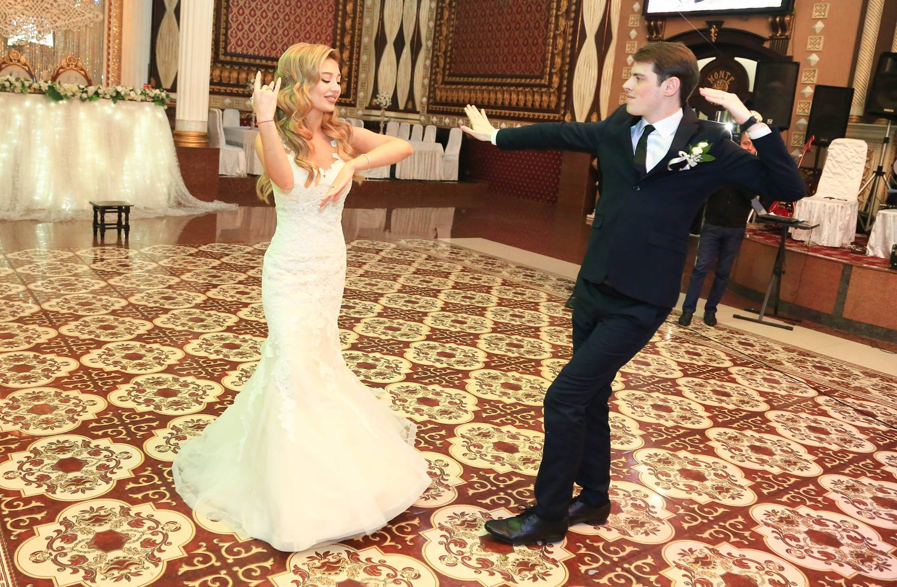

Wedding Makeup Tips
You’ve got your dream partner, your perfect dress sorted
All your hair accessories
And now it’s time to think about your Wedding Makeup
1. How to get a perfect Wedding make-up application
Wedding make-up application for photography is different than/for everyday. A light makeup application is beautiful from 24 inches away, but won’t translate well to photography and video. In the end photos and videos are what last. Wedding day makeup is typically darker on the eyes, cheeks and lips, which is why consulting with a professional wedding Makeup Artist is so important.

Your skills or a friend’s skills may be passable for an everyday makeup application or even a date, but a professional makeup artist comes armed with skills to ensure your makeup for your wedding will stay intact and fresh looking throughout the day and into the night Being that I am a professional makeup artist myself, of course my advice is a bit biased, but I believe it could be one of the best investments a bride could make for her wedding day. Although I recognize that hiring a professional isn’t for everyone, there are certain types of brides that it could be most beneficial for. If you’re the type of bride who gets riddled with nerves easily or has little experience with makeup applications, hiring a professional makeup artist for your wedding would not only make your wedding day less stressful, but the day when you can really take pleasure in having someone else do your makeup. Whether you’re hiring a Makeup Artist or doing your own, I generally think that the best bridal make-up is simply the most exquisitely polished version of you.
2. How to pick your wedding Makeup Artist
A true professional makeup artist has a keen eye for art. They view every client's face as their blank canvas to create a beautiful masterpiece. They are equipped with the proper tools and knowledge to use the correct colors and techniques that are needed to bring out your best features for your wedding day. Many professionals have received advanced training in makeup education, having gone to reputable schools and continue to take classes to keep up with trends and techniques for clients. Professional makeup artists have a wealth of knowledge in face shape, color theory/analysis, and are also skilled in camouflage and cover up techniques to adequately conceal the flaws in your skin. If you’re the type of bride who typically wears little to no makeup or gets easily stressed, I highly recommend hiring a professional. Believe it or not, it elevates a lot of stress and tension that tends to build as your wedding day approaches. Everyone gets filled with nerves, jitters, and excitement while getting ready for their wedding day. Trying to apply a top quality makeup application that looks not only flawless in person, but in pictures as well is hard enough. This is where having a professional comes in handy. We’re there to help calm, pamper, and alleviate your stress, leaving you looking effortlessly fresh and radiant, so you can start your forever with the one you love looking and feeling your absolute best!
3. Run the trial
Some women may choose to go to a makeup counter for their bridal makeup because it's cheaper, or may choose to have a friend do their makeup for their wedding day because it's free. While in theory these options may sound great, the reality of it is, you never have the option of having a trial run through of what your makeup will look like the day of your wedding. So if you end up hating the way it turns out, you’re stuck with it. The bad thing with getting your makeup done at places like department stores or even places like Sephora or Ulta, is the majority of the personal working there aren’t real makeup artists, and are not trained in how to properly analyze and work on different face shapes and colors. They’re there only knowledgeable about store products and are there to sell store products.
Trial is one of the most important part of your make-up plan. A trial run is basically a preview of what you will look like on your wedding day. Most professionals will give you a large discount for the trial session and analyze your face and personality to help determine how soft or bold you’d like your bridal makeup to be. Also during the trial, the makeup artist will be taking down continuity notes of everything they use on you; color and types of foundation that were used, powders, names of lashes that were applied, names and colors of blush and lipstick etc. *Everything* is written down and kept so that no time is wasted the day of the wedding, and to ensure that you will look exactly the way you did for your trial. Additionally, if the makeup is not done to your liking for the trial, you have the time to communicate that with your makeup artist, in order to make the necessary changes right then and there so that you can be given exactly what you are looking for.
4. Bring references
Start looking for images of make-up that you really like. Look through magazines or pinterest for inspiration. Look for women with with similar coloring to yours whose make-up you love. And if you have any photos of yourself where you particularly like your make-up, bring those along as well.
5. Beautiful make-up starts with beautiful skin
It’s important to take good care of your skin in order to get a flawless look on your big day. It’s extremely difficult to apply make-up on to the skin that is dry or flaky.
For oily skin I recommend washing your face with CLINIQUE Liquid Facial Soap, for normal to dry skin and La Roche-Posay Effaclar Purifying Foaming Gel. Then using CLINIQUEClarifying Lotion 4 for oily skin and La Roche-Posay Effaclar Micro-Exfoliating Astringent Facial Toner for normal to dry skin.
Follow it up with the moistorizer CLINIQUEDramatically Different Moisturizing for oily skin and La Roche-Posay Toleriane Daily Soothing Moisturizer for normal to dry skin.
And be sure to use a hydrating cream around your eyes, which helps your under eye concealer to go on smoothly.One of my favorites is from Mac Cosmetics is Fast response eyecream
6. Go pro
The best wedding make-up should last as long as you do, so I love Mac Cosmetic’s Prolongwear range which includes foundations, concealers, lip and eye products that provide superior wear that will see you through your wedding day and night.

7. Go light
Lots of wedding photography is done in natural light, and if you choose a heavy base the make-up will look obvious. My favorite thing to do is to ensure that T zone is matte. To make make-up overlasting. One of my favorite primers is PREP + PRIME SKIN REFINED ZONE

Also some foundations and powders look different in pictures, since they reflect light differently. That’s why your foundation needs to match your skin tone and concealer no more than one or two shades lighter.
8. Define it
I use blush on the cheeks as well as a bronzer to bring definition to the face, enhance bone structures and give a warm sunkissed glow. I like mixing different blushes and bronzers together. My favorites are from Nars and Benefit cosmetics.
9. Shine the light
Doesn’t everyone want to shine on their wedding day? To get that wedding day glow, I like applying highlighter to the topes of cheekbones, near the tear ducts, and just under the brows.
Any more of that and you’ll be looking like a disco ball.
My favorites are from Mac Cosmetics Extra Dimension Skinfinish, and Becca Shimmering Skin Perfector.

10. All about details
Now that we perfected skin, let’s move to eyes, brows and lips. I always use eyeshadow primer or creme eyeshadow base to ensure the longevity of the eyeshadows even when you’re crying out of happiness. Primer will also prevent from creasing throughout the day. My favorite eyeshadow primers are Mac Paint pot, Tarte Natural Eyeprimer and Urban Decay.
Mascara needs to be waterproof so it doesn’t end up on your cheeks if you happen to shed a tear
Or a dozen
Lips. My choice is lasting lip color prolong wear lipliners will stay in place for a long time and prevent lipstick from bleeding. Here are some favorites Mac pro longwear lipliner, Artdeco.
Tip: Apply the lipliner to the whole lip before applying lipstick. It makes color last even longer. You can also use retro matte lipsticks.
In conclusion just wanted to say that the wedding day is supposed to be your (and your grooms) special day, so don’t be afraid to experiment with colors and styles!
Thank you for reading, I hope you enjoyed! Stay tuned for more!